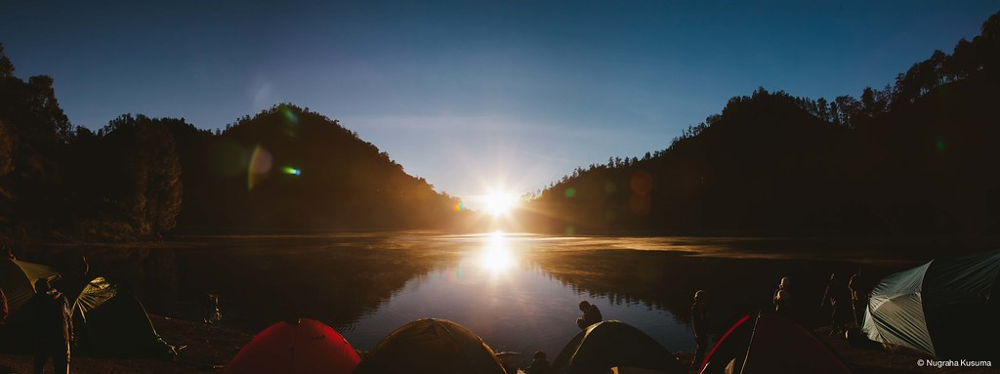
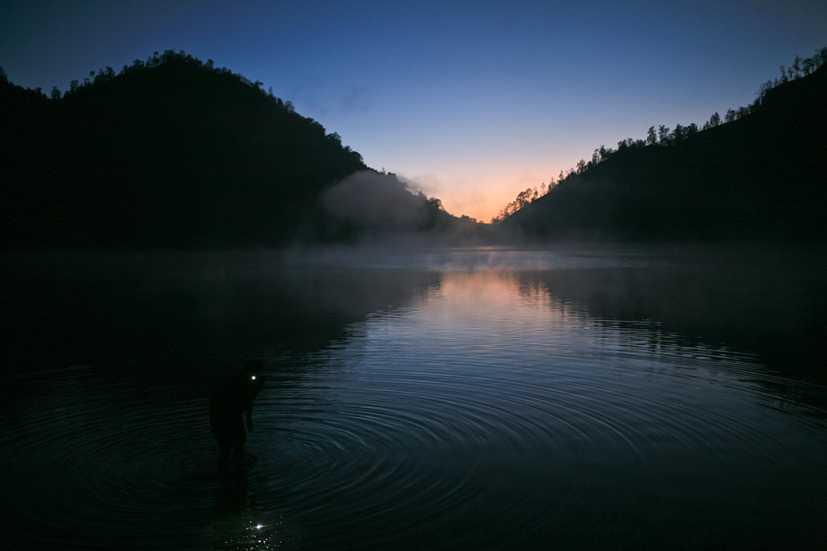
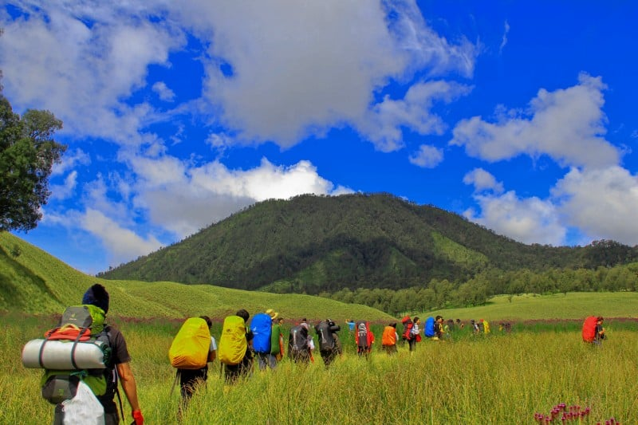
GUNUNG KERINCI
Gunung adalah suatu bentuk permukaan tanah yang letaknya jauh lebih
tinggi daripada tanah-tanah di daerah sekitarnya. Gunung pada umumnya
lebih besar dibandingkan dengan bukit, tetapi bukit di suatu tempat
bisa jadi lebih tinggi dibandingkan dengan apa yang disebut gunung di
tempat yang lain. Gunung pada umumnya memiliki lereng yang curam dan
tajam atau bisa juga dikelilingi oleh puncak-puncak atau pegunungan.
Pada beberapa ketinggian gunung bisa memiliki dua atau lebih iklim,
jenis tumbuh- tumbuhan, dan kehidupan yang berbeda.Sebenarnya tidak
ada definisi umum untuk gunung. Ketinggian, volume, relief, kecuraman,
jarak dan kontinuitas dapat dijadikan kriteria dalam mendefinisikan
gunung. Menurut KBBI, definisi gunung adalah "Bukit yg sangat besar
dan tinggi (biasanya tingginya lebih dari 600 m)" Gunung paling tinggi
di Indonesia adalah Puncak Jaya yang berada di Papua.
GUNUNG KERINCI
Gunung Kerinci (juga dieja "Kerintji", dan dikenal sebagai Gunung
Gedang, Berapi Kurinci, Kerinchi, Korinci, atau Puncak Indrapura)
adalah gunung tertinggi di Sumatra, gunung berapi tertinggi di
Indonesia, dan puncak tertinggi di Indonesia di luar Papua. Gunung
Kerinci terletak di Provinsi Jambi, di Pegunungan Bukit Barisan,
dekat pantai barat, dan terletak sekitar 130 km sebelah selatan
Padang Provinsi Sumatra Barat. Gunung ini dikelilingi hutan lebat
Taman Nasional Kerinci Seblat dan merupakan habitat harimau sumatra
dan badak sumatra.Puncak Gunung Kerinci berada pada ketinggian 3.805
mdpl, di Kabupaten Kerinci, Provinsi Jambi, di sini pengunjung dapat
melihat di kejauhan membentang pemandangan indah Kota Jambi, Padang,
dan Bengkulu. Bahkan Samudera Hindia yang luas dapat terlihat dengan
jelas. Gunung Kerinci memiliki kawah seluas 400 x 120 meter dan
berisi air yang berwarna hijau. Di sebelah timur terdapat danau
Bento, rawa berair jernih tertinggi di Sumatra. Di belakangnya
terdapat gunung tujuh dengan kawah yang sangat indah yang hampir
tak tersentuh.
 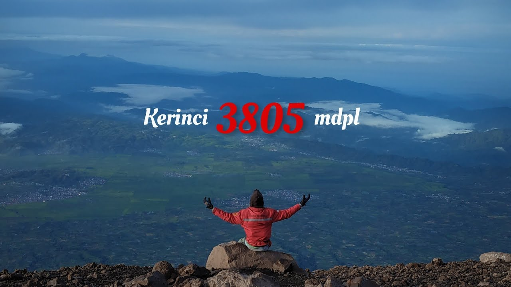
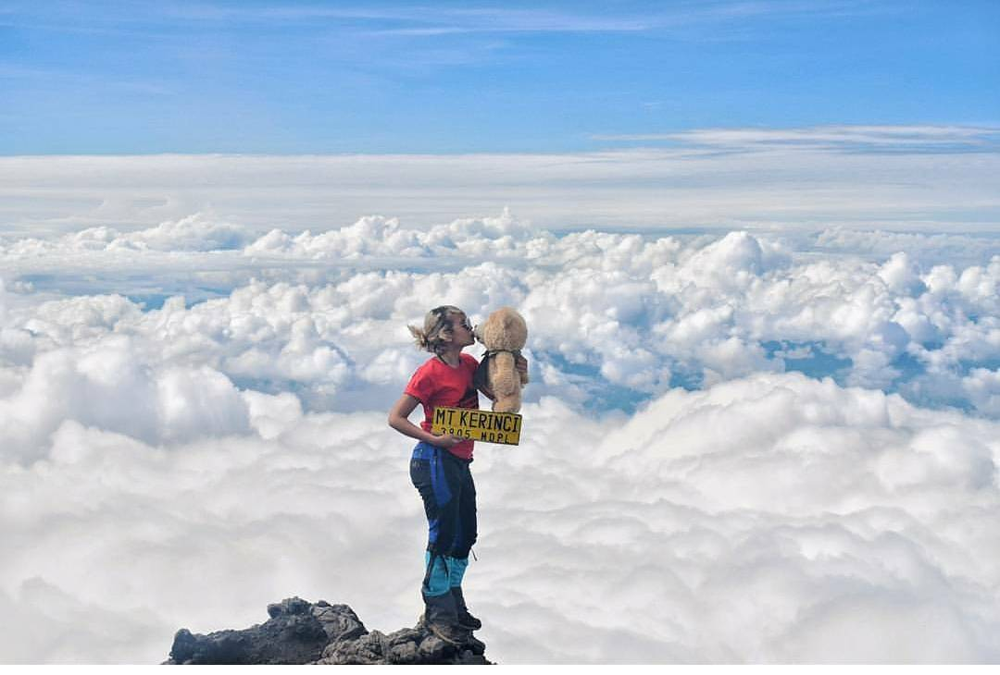
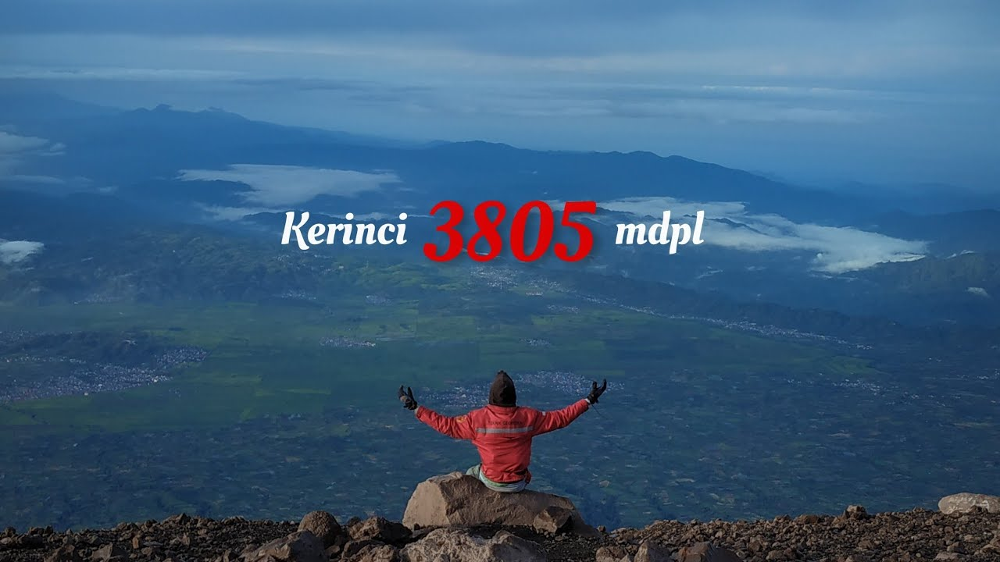
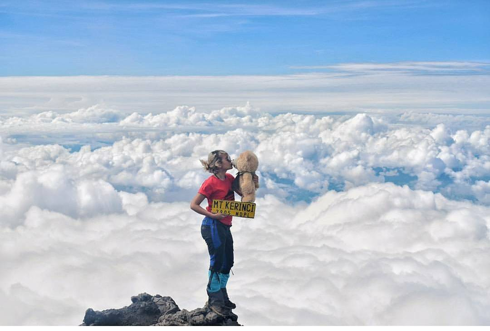
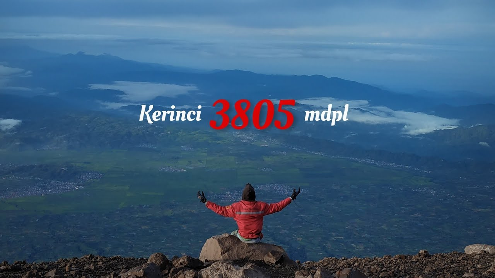
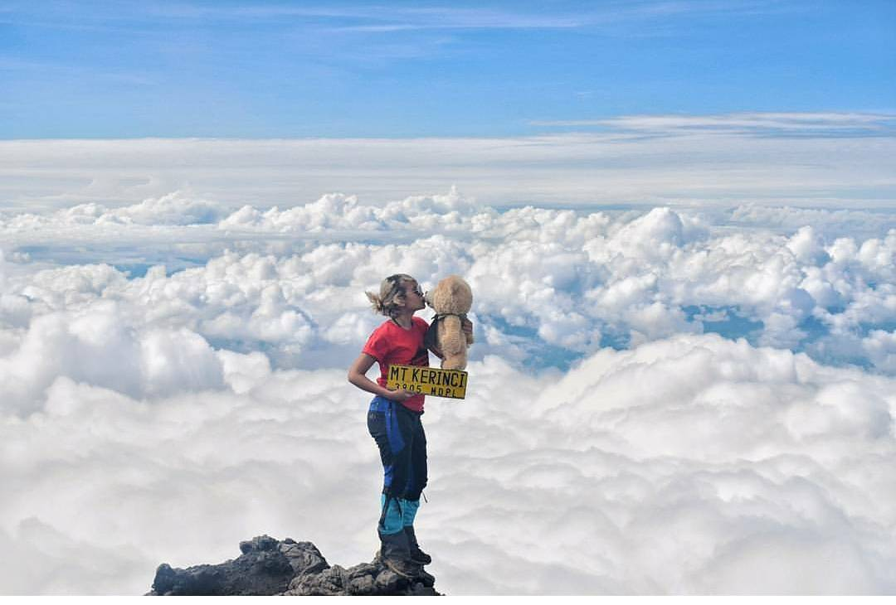
GUNUNG SEMERU
Gunung Semeru atau Gunung Meru adalah sebuah gunung berapi
kerucut di Jawa Timur, Indonesia. Gunung Semeru merupakan
gunung tertinggi di Pulau Jawa, dengan puncaknya Mahameru,
3.676 meter dari permukaan laut (mdpl). Gunung Semeru juga
merupakan gunung berapi tertinggi ketiga di Indonesia setelah
Gunung Kerinci di Sumatra dan Gunung Rinjani di Nusa
Tenggara Barat. Kawah dipuncak Gunung Semeru dikenal dengan nama
Jonggring Saloko.Gunung Semeru secara administratif termasuk
dalam wilayah dua kabupaten, yakni Kabupaten Malang dan
Kabupaten Lumajang, Provinsi Jawa Timur. Gunung ini termasuk
dalam kawasan Taman Nasional Bromo Tengger Semeru.Semeru
mempunyai kawasan hutan Dipterokarp Bukit,hutan Dipterokarp Atas,
hutan Montane, dan Hutan Ericaceous atau hutan gunung.Posisi
geografis Semeru terletak antara 8°06' LS dan 112°55' BT.Pada
tahun 1913 dan 1946 Kawah Jonggring Saloka memiliki kubah dengan
ketinggian 3.744,8 m hingga akhir November 1973.
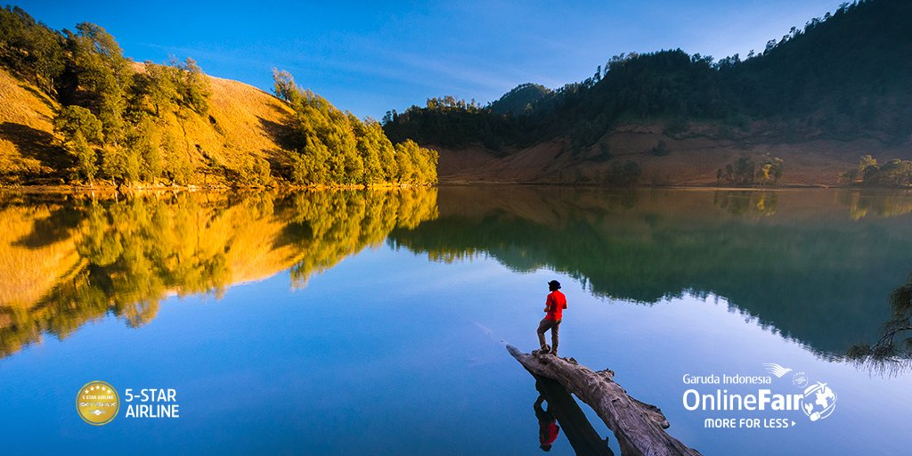 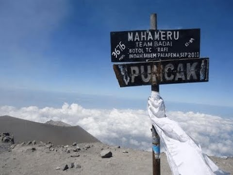
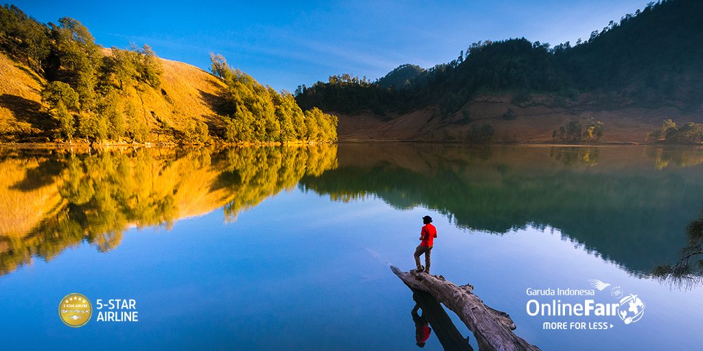 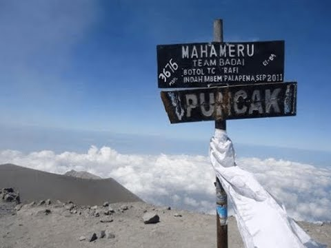
GUNUNG RINJANI
Gunung Rinjani adalah gunung yang berlokasi di Pulau Lombok,
Nusa Tenggara Barat. Gunung yang merupakan gunung berapi kedua
tertinggi di Indonesia dengan ketinggian 3.726 m dpl serta
terletak pada lintang 8º25' LS dan 116º28' BT ini merupakan
gunung favorit bagi pendaki Indonesia karena keindahan
pemandangannya. Gunung ini merupakan bagian dari Taman Nasional
Gunung Rinjani yang memiliki luas sekitar 41.330 ha dan ini
akan diusulkan penambahannya sehingga menjadi 76.000 ha ke arah
barat dan timur.Secara administratif gunung ini berada dalam
wilayah tiga kabupaten: Lombok Timur, Lombok Tengah dan Lombok
Barat.
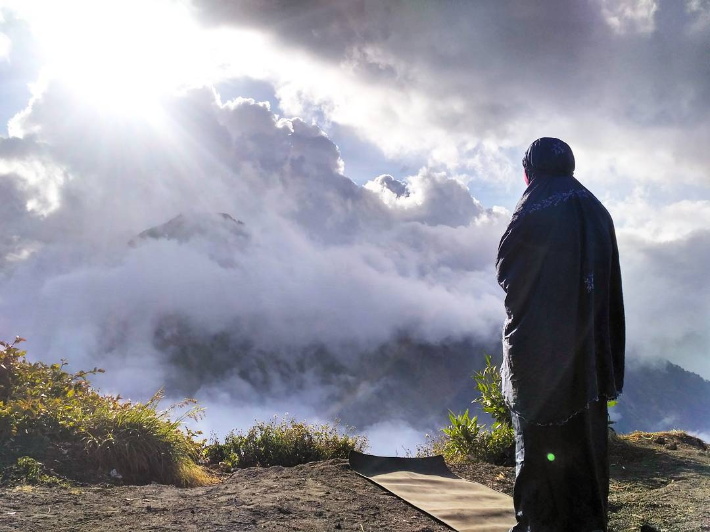 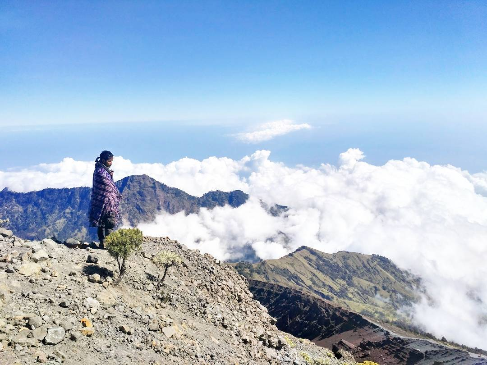 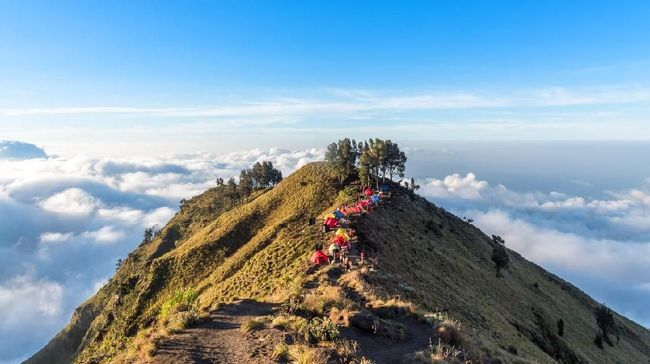
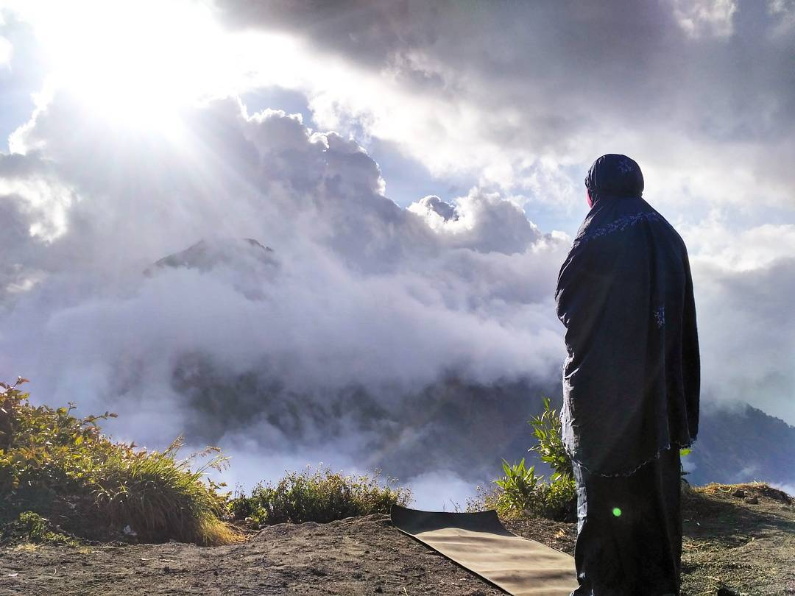 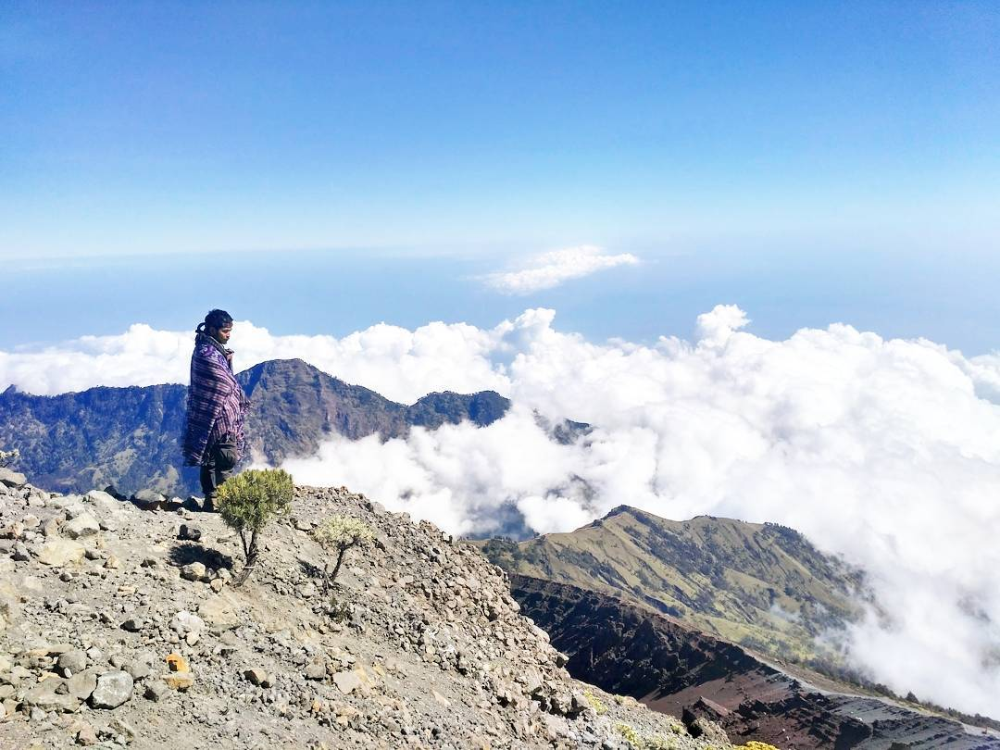 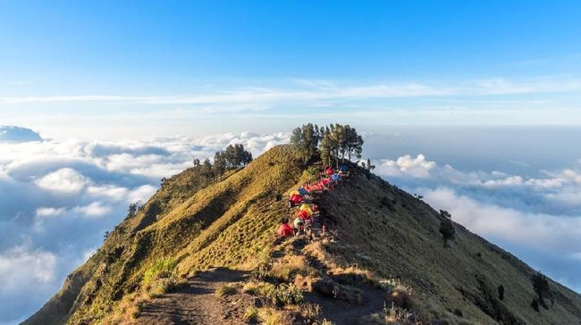
SEVEN SUMMITS
HARI BESAR PERINGATAN LINGKUNGAN HIDUP
| Tanggal | Kegiatan |
|---|---|
| 10 JANUARI | Hari Perencanaan Gerakan 1 Juta Pohon |
| 2 FEBRUARI | Hari lahan basah Se Dunia |
| 21 FEBRUARI | Hari Peduli Sampah nasional |
| 6 MARET | Hari Strategi konservasi Se Dunia |
| 20 MARET | Hari Kehutanan Sedunia |
| 21 MARET | Hari Hutan Internasional |
| 22 MARET | Hari Air Se Dunia |
| 23 MARET | Hari Meteorolgi |
| 22 APRIL | Hari Bumi |
| 5 JUNI | Hari Lingkungan Hidup Sedunia |